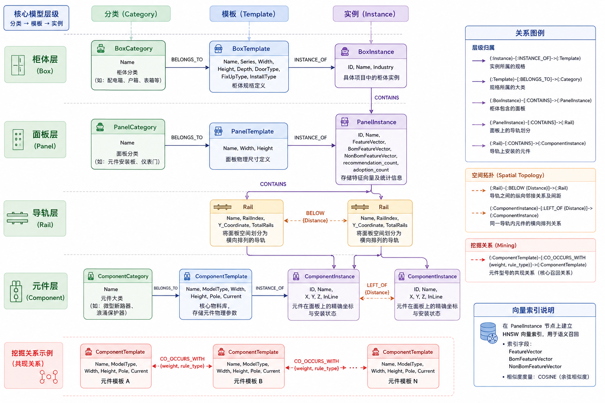
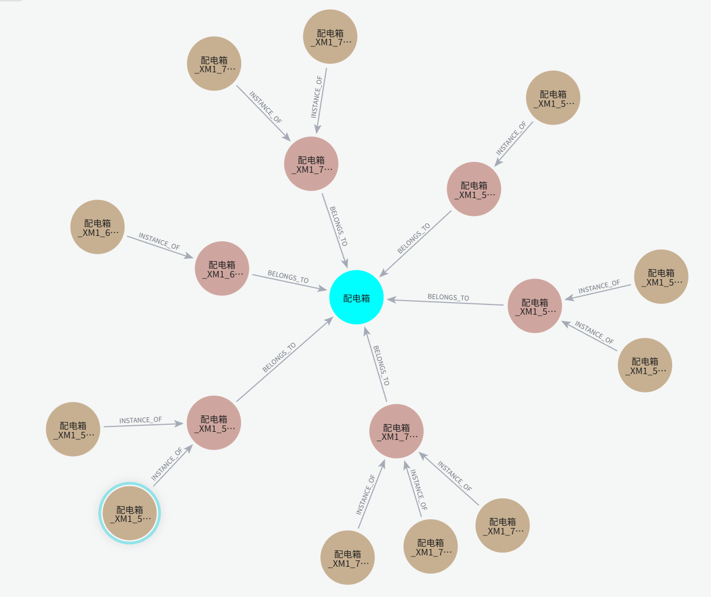
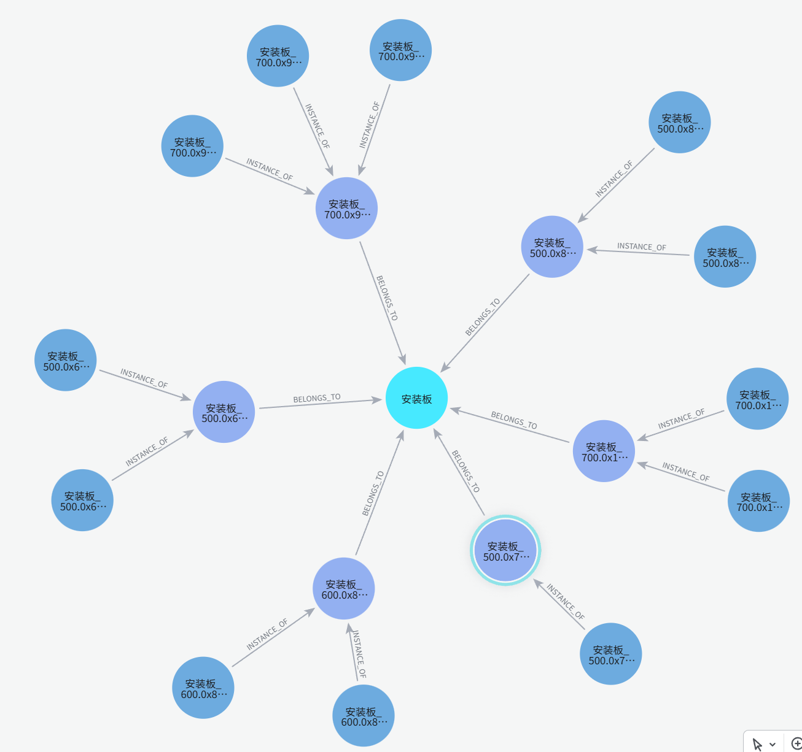
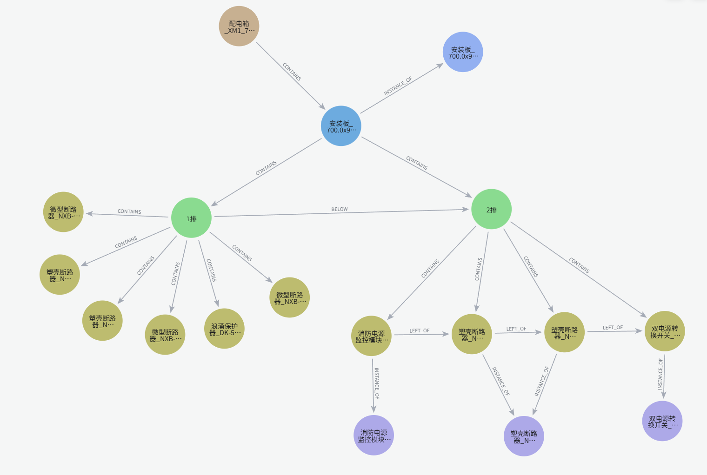
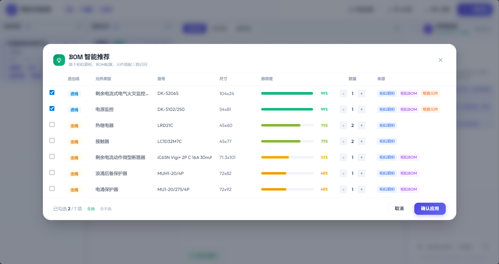
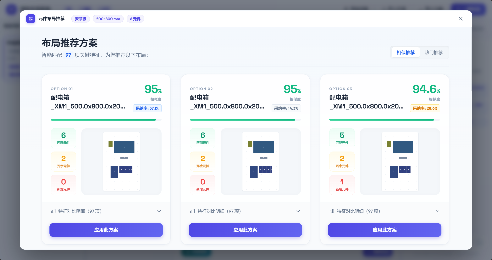
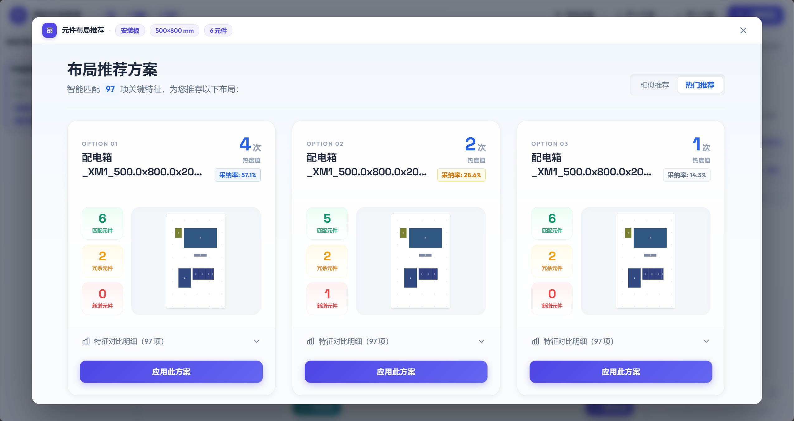
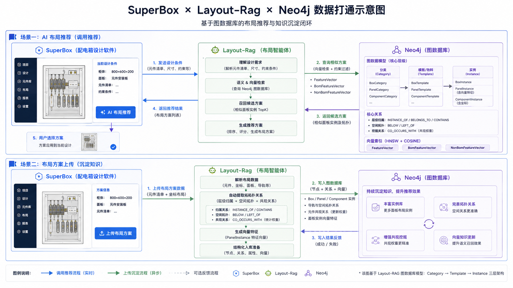

在系统迭代早期，采用了 “关系型数据库 (MySQL) + 专门向量数据库 (Milvus)” 的分离架构。虽然解决了基本的存储与搜索问题，但在工业布局场景下遇到了核心挑战：
本次改造全面迁移至 Neo4j 6.x 图原生数据库：

系统采用“分类 -> 模板 -> 实例”的三层解耦架构：
| 标签 | 属性 | 说明 |
|---|---|---|
| BoxCategory | Name |
柜体分类（如：配电箱、户箱、表箱等） |
| BoxTemplate | Name, Series, Width, Height, Depth, DoorType, FixUpType, InstallType |
柜体规格定义 |
| BoxInstance | ID, Name, Industry |
具体项目中的柜体实例 |

| 标签 | 属性 | 说明 |
|---|---|---|
| PanelCategory | Name |
面板分类（如：元件安装板、仪表门） |
| PanelTemplate | Name, Width, Height |
面板物理尺寸定义 |
| PanelInstance | ID, Name, FeatureVector, BomFeatureVector, NonBomFeatureVector, recommendation_count, adoption_count |
存储了用于 RAG 检索的特征向量及统计信息 |

| 标签 | 属性 | 说明 |
|---|---|---|
| Rail | Name, RailIndex, Y_Coordinate, TotalRails |
将面板空间划分为横向排列的导轨 |
| 标签 | 属性 | 说明 |
|---|---|---|
| ComponentCategory | Name |
元件大类（如：微型断路器、浪涌保护器） |
| ComponentTemplate | Name, ModelType, Width, Height, Pole, Current |
核心物料库，存储元件物理参数 |
| ComponentInstance | ID, Name, X, Y, Z, InLine |
元件在面板上的精确坐标与安装状态 |

(Instance)-[:INSTANCE_OF]->(Template): 实例所属的规格。(Template)-[:BELONGS_TO]->(Category): 规格所属的大类。(BoxInstance)-[:CONTAINS]->(PanelInstance): 柜体包含的面板。(PanelInstance)-[:CONTAINS]->(Rail): 面板上的导轨划分。(Rail)-[:CONTAINS]->(ComponentInstance): 导轨上安装的元件。(Rail)-[:BELOW {Distance}]->(Rail): 导轨之间的纵向邻接关系及间距。(ComponentInstance)-[:LEFT_OF {Distance}]->(ComponentInstance): 同一导轨内元件的横向排列关系。(ComponentTemplate)-[:CO_OCCURS_WITH {weight, rule_type}]->(ComponentTemplate):
核心召回关系。表示两个型号的元件经常出现在同一个面板中。weight 代表共现频次。系统在 PanelInstance 的特征属性上建立了 HNSW 向量索引，用于实现语义召回。
FeatureVector, BomFeatureVector, NonBomFeatureVectorEUCLIDEAN (欧氏距离)基于图向量检索与知识图谱挖掘，系统实现了多路召回 + 置信度融合的智能 BOM 补全：
CO_OCCURS_WITH 关系，挖掘历史数据中与当前元件高频“成对出现”的邻居部件（如：断路器与辅助触头的固定搭配）。
系统内置了自动化的业务反馈闭环：
recommendation_count 自动加 1；当用户点击“应用”并确认，其 adoption_count 自动加 1。
除了单纯的几何相似度，系统引入了热度排序维度：
adoption_count 较高的“明星方案”。
使用 Electron 框架将布局算法封装为轻量级桌面工具：
build_electron.bat 一键打包，方便集成到现有的工业设计环境。PLMGraphImporter 会自动提取该方案的几何特征、拓扑关系并重新计算向量指纹，将其作为新的“经验节点”沉淀到 Neo4j 知识图谱中，完成知识的自动化积累。